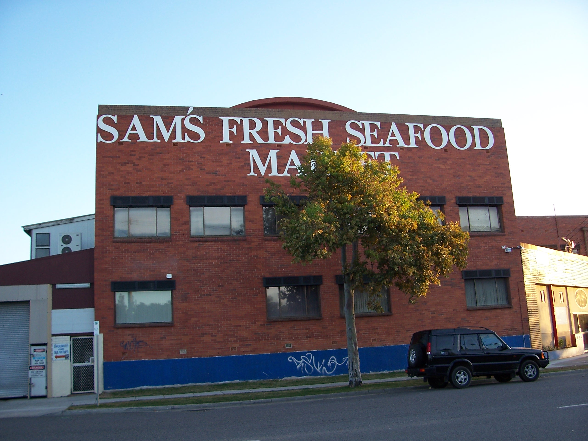
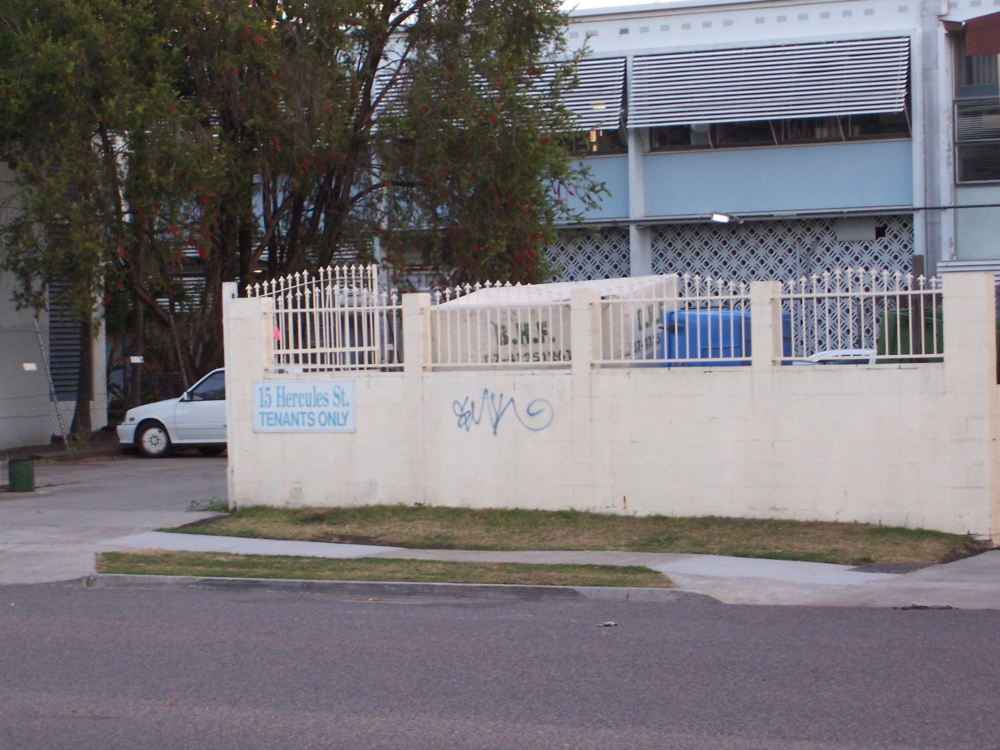
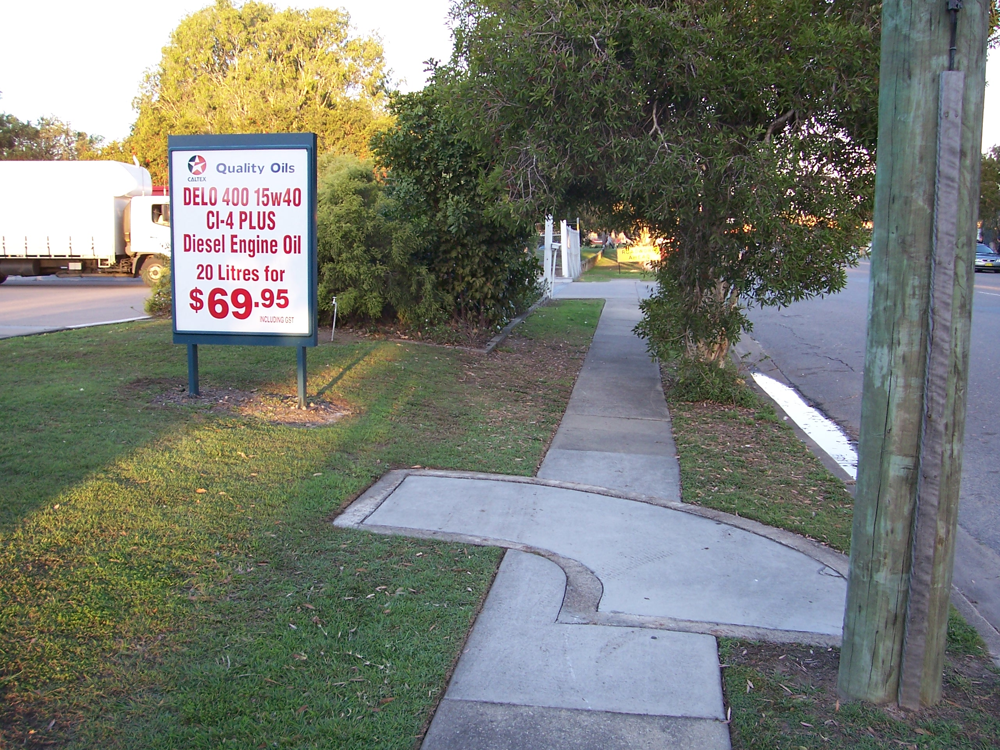

Foley Matthews Information,
"My Investigation."
Here is original stuff by me.
You can contact me via this link if you are wise enough.
While on leave recently, I decided to see if I could find out anything about Brisbane's
first cross river tunnel, before someone else claims to have built the "first" one.
I first spent some time at the State Archives, Runcorn, basicly looking for old maps. I
thought it might show up as an easement, but i couldn't find lapsed easements without knowing
its number first. ??? Anyway, this didn't show much except that some streets were resumed to
create the barracks site during wartime. So I went over to Hamilton and looked around a couple
of small streets before crossing over to Bretts wharf to look along the river side. I passed by
the new wharf structure, which was poured on top of the old concrete wharves, so no disturbance
there. Looked at the new cruise terminal and shops etc, and noticed that back from the wharf
there is new building going on. I continued around to Hercules Street, getting pretty tired by
now and wondering if Rod really knew what he was talking about, or was just having me on, or
perhaps the whole thing was a myth. Then suddenly, what did I see, opposite this building

if you don't know where that is, it is next to this building

what did I see, but not too cleverly disguised, (insert fanfare here), this!!!

What I can only assume to be a set of stairs decending here.
Any more info, please contact the author.
Web page Copyright © Foley U. Matthews 2006.